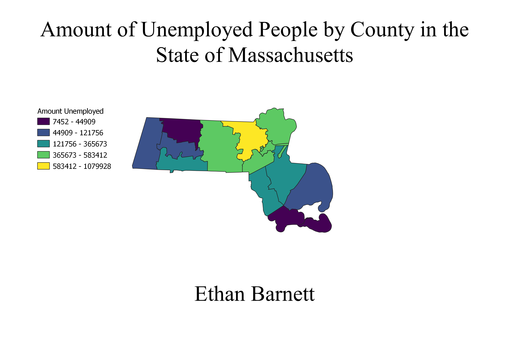

Homework 7: Unemployment Choropleth
Ethan Barnett
This map previews the amount of people unemployed by the county in the state of Massachusetts in the year 2019. I decided to do my map on the amount of people unemployed because I was interested to see how the COVID-19 pandemic has affected different counties in the state.

Data used for this project
CSV dataset
Link to shapefile